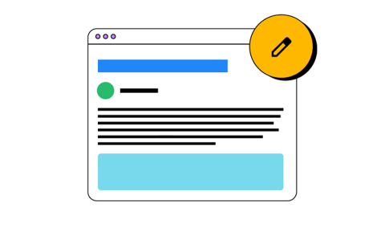

Guidance to build modern web experiences that work on any browser.
Building a better web, together
We want to help you build beautiful, accessible, fast, and secure websites that work cross-browser, and for all of your users. This site is our home for content to help you on that journey, written by members of the Chrome team, and external experts who specialize in web development topics such as accessibility, performance, design, and more.
Read up on the latest features and best practices when it comes to identity and payment processing.
Explore the web platform
The web platform is a constantly evolving ecosystem of browser features and APIs for developers to make websites that are easy and delightful to use. These pages are pathways for you to dive into each part of the web platform on web.dev—at your pace.
Read our blog to learn the latest news in web development, including new web platform features, updates to Baseline, AI,Core Web Vitals, and more.

Baseline
Get up to speed with the latest updates and news on Baseline.
August 2026 Baseline monthly digest
Read about various happenings with Baseline during August 2026.
Submit your proposals for Interop 2027
It's time to let us know which web platform features should be part of Interop 2027.
Find features to support for Interop
2027 with your coding agent
Learn how you can use your coding agent to find Interop 2027 proposals to upvote, or find features to propose.
July 2026 Baseline monthly digest
July 2026 Baseline monthly digest
CSS and UI design
Learn the latest tips and techniques to use in your work, right now.
Adapting typography to
user preference using CSS
Adapt a font to your users' preferences, so they're maximally comfortable reading your content.
What are source maps?
Improve web debugging experience with source maps.
New CSS color spaces and
functions in all major engines
All major engines now support the new CSS color spaces and functions. Find out how they can bring vibrancy to your designs.
CSS subgrid
Subgrid is now interoperable across all three major engines. Find out how to use it.
Core Web Vitals
Build faster websites and apps by understanding Core Web Vitals and other metrics.
The most effective ways to
improve Core Web Vitals
A collection of best practices for optimizing websites' Core Web Vitals performance based on the state of the web.
Common misconceptions
about how to optimize LCP
Explore common misconceptions about optimizing Largest Contentful Paint by looking beyond image optimization and considering factors like Time to First Byte and resource load delay.
How to optimize INP
Learn how to optimize for the Interaction to Next Paint metric.
Best practices for measuring
Web Vitals in the field
Guidance for collecting and reporting Web Vitals quickly and reliably.
Progressive Web Apps
Create capable web experiences.
Learn PWA
A course that breaks down every aspect of modern progressive web app development.
New patterns for amazing apps
Dive into a fantastic collection of new patterns for amazing apps, including clipboard patterns, file patterns, and advanced app patterns.
TransformStream is now
supported cross browser.
Now that transform streams are supported in Safari, Firefox, and Chrome they are finally ready for prime time.
Project Fugu API showcase
On the Chrome Developers site, explore capabilities APIs.
Accessible for all
Learn how to make your sites more accessible for people with disabilities, whether permanent, temporary, or situational.
Learn Accessibility
Our new course is a great entry point and reference for accessibility topics.
Building the main navigation for a website
This tutorial describes how to build an accessible main navigation of a website. You learn about semantic HTML, accessibility, and how using ARIA attributes can sometimes do more harm than good.
Testing web design color contrast
An overview of three tools and techniques for testing and verifying accessible color contrast of your design.
Community highlight: Melanie Sumner
Read our interview with Melanie, a software engineer who specializes in digital accessibility.
Payments and identity
Find the latest techniques and best practices for payments and helping users safely log into your sites and apps.
Create a passkey for passwordless logins
Passkeys make user accounts safer, simpler, easier to use.
Web payments overview
Learn more about Web Payments and how they work.
Sign in with a passkey
Create a sign in experience that uses passkeys while still accommodating existing password users.
Payment and address form best practices
Maximize conversions by helping your users complete address and payment forms as quickly and easily as possible.
Developer Newsletter
Get the latest news, techniques and updates straight to your inbox.
Don't worry, no spam here! Your information will only be used for web.dev and Chrome related updates and our emails are typically no more than 1-2 times a month. You can unsubscribe anytime.
We want to help you build beautiful, accessible, fast, and secure websites that work cross-browser, and for all of your users. This site is our home for content to help you on that journey, written by members of the Chrome team, and external experts.